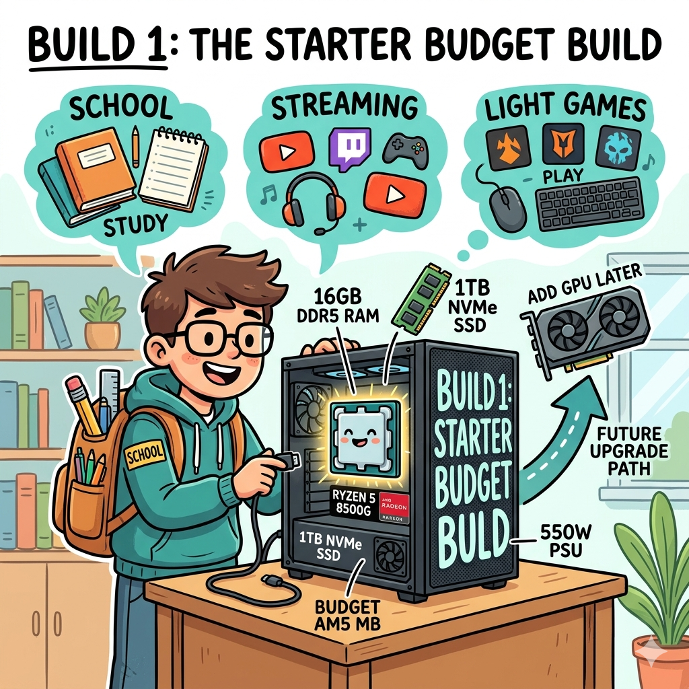
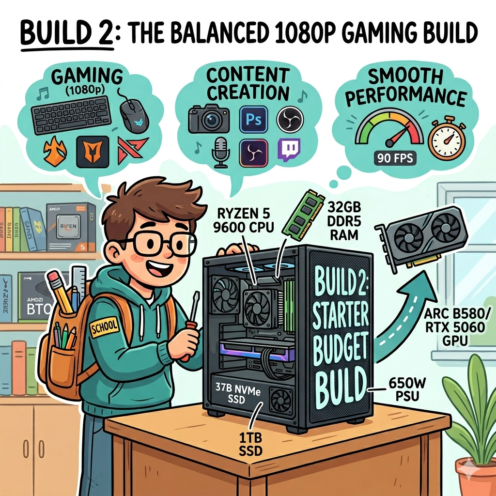
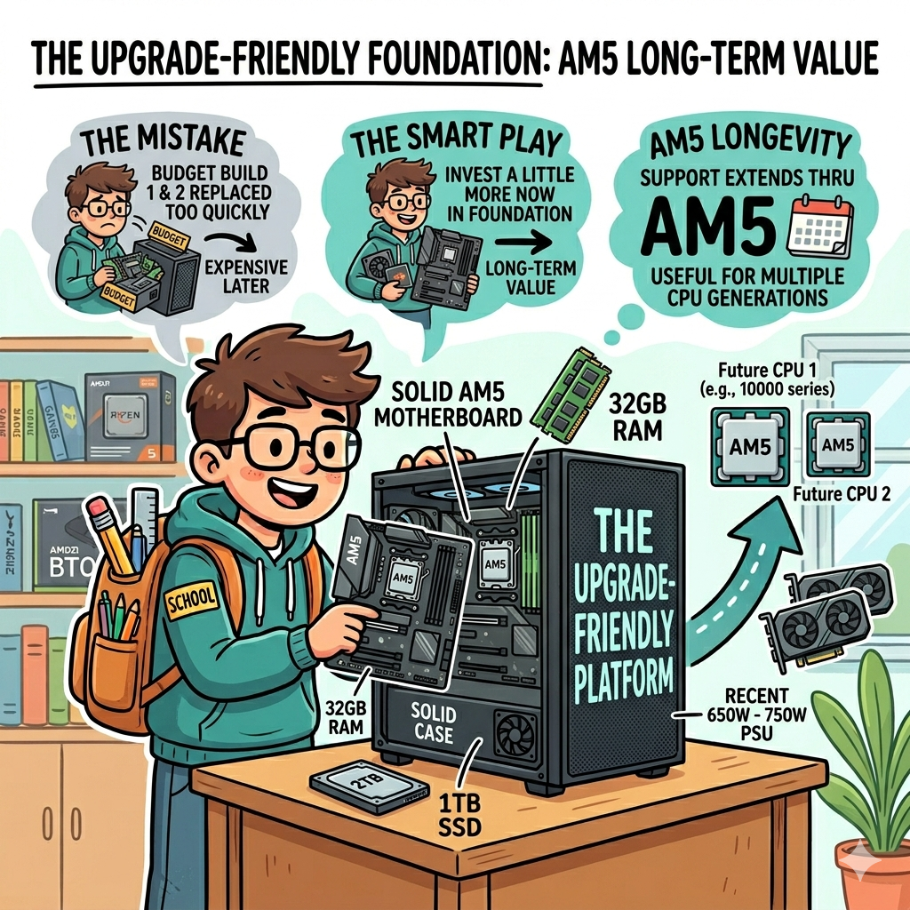
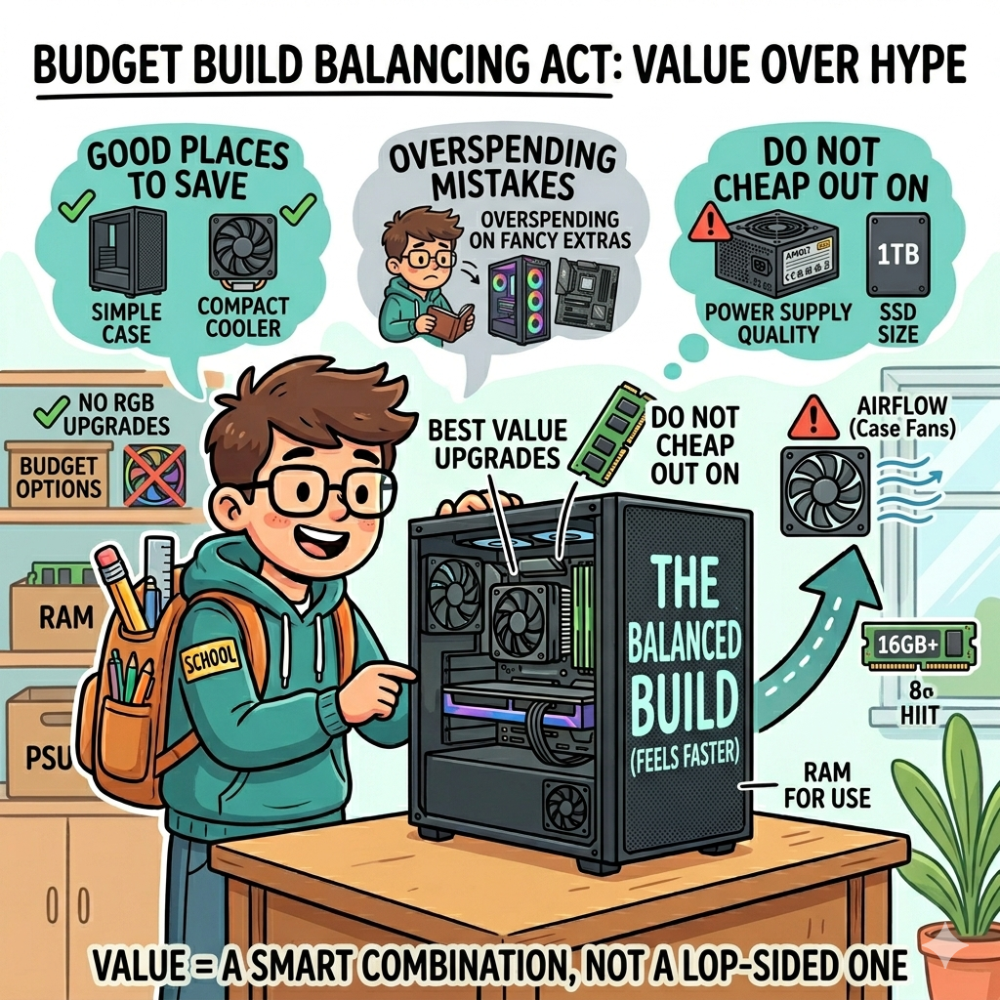
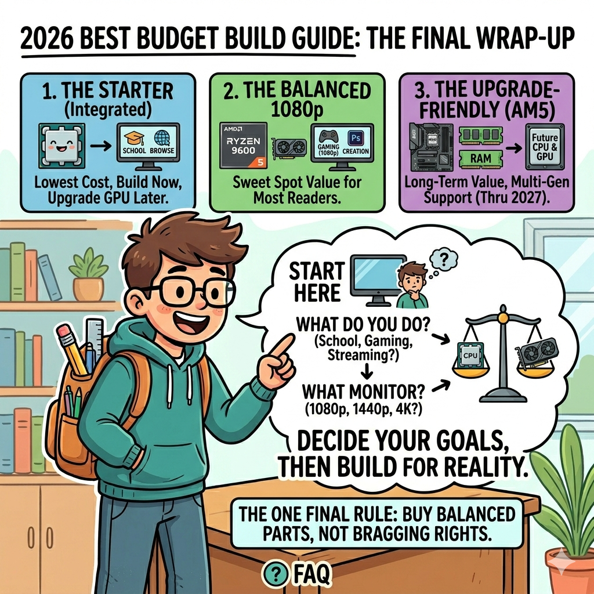

Build 1: The Starter Budget Build
This is the best budget PC build for people who need a real desktop for school, web browsing, streaming, light editing, and lighter games without paying for a separate graphics card right away. A great example of this style is a Ryzen 5 8500G system. That processor includes integrated Radeon graphics, which means you can build now and add a dedicated GPU later when your budget allows.
A smart starter list looks like this: Ryzen 5 8500G, a budget AM5 motherboard, 16GB of DDR5 RAM, a 1TB NVMe SSD, a reliable 550W power supply, and a simple airflow-focused case. This build usually lands around the low-to-mid budget range and gives you a fast everyday computer with a clear future upgrade path. It is not built for ultra graphics settings in modern AAA games, but it is excellent for general use and surprisingly capable for esports and lighter titles.

Build 2: The Balanced 1080p Gaming Build
For most people asking about the best budget gaming PC build in 2026, this is the sweet spot. You want enough CPU power to stay smooth in modern games, enough graphics power for good settings, and a platform that does not instantly feel outdated. A very strong value approach is a Ryzen 7 7800X3D paired with a mainstream graphics card such as a GeForce RTX 5070 class card, depending on current deals and feature priorities.
Why this level? Because it lines up well with what most gamers actually use: a 1080p monitor, a desire for smooth frame rates, and a limited budget. Pair the CPU and GPU with 16GB to 32GB of DDR5, a 1TB SSD, and a quality 650W power supply. This type of build can handle modern games, school work, content creation, and normal desktop tasks without feeling like a compromise machine. It is the best all-around recommendation for the average buyer who wants value without feeling stuck in the entry level.

Build 3: Spend a Little More, Save More Later
Some budget builds become expensive because you replace too many parts too quickly. That is why an upgrade-friendly build can be one of the smartest budget choices. Instead of buying the absolute cheapest motherboard, power supply, and case, you spend a little more on the foundation. A Ryzen 5 9600 on AM5 with a solid motherboard, 32GB of RAM, 1TB or 2TB SSD space, and a decent 650W to 750W power supply creates a base that can accept stronger GPUs later.
This matters because AMD has publicly said AM5 support extends through 2027 and beyond, which makes the platform more attractive for budget builders who want room to grow. In plain English, that means your motherboard may stay useful for more than one CPU generation. If you upgrade once every few years instead of every year, this approach can be the best long-term value even if the up-front cost is a bit higher.

Where to Save Money and Where Not to Cheap Out
The biggest beginner mistake is overspending on the wrong part. For a budget PC, spend the most on the CPU and GPU combination that fits your goals. Save money on the case if needed, but do not buy a dangerously bad power supply. Do not waste money on giant RGB upgrades before you have enough RAM or SSD space. And unless you know you need more, a midrange motherboard is usually smarter than a flashy premium one.
- Good places to save: fancy case extras, oversized coolers, unnecessary RGB, top-tier motherboard features.
- Do not cheap out on: power supply quality, SSD size, airflow, and enough RAM for your actual use.
- Best value upgrades: moving from 8GB to 16GB, adding a better GPU, or upgrading to a larger SSD.
A balanced build feels faster than a lopsided one. A great GPU with only 8GB of system RAM, or a powerful CPU trapped behind a weak power supply and tiny SSD, is not a value win.

Which Budget Build Is Best for You?
If you need the lowest cost and want to upgrade later, the starter integrated-graphics build makes the most sense. If you want the best everyday mix of gaming, school work, and value, the balanced 1080p build is the winner for most readers. If you want the smartest long-term path, the upgrade-friendly AM5 build is probably the strongest overall choice because it keeps more doors open.
The best budget PC builds of 2026 are not one single perfect list. They are smart combinations built around your goals. Decide what you actually do on your computer, decide what monitor you plan to use, and then build around that reality. That is how beginners avoid wasting money and end up with a system that still feels good months later.
If you remember one rule from this whole article, let it be this: buy balanced parts, not bragging rights.